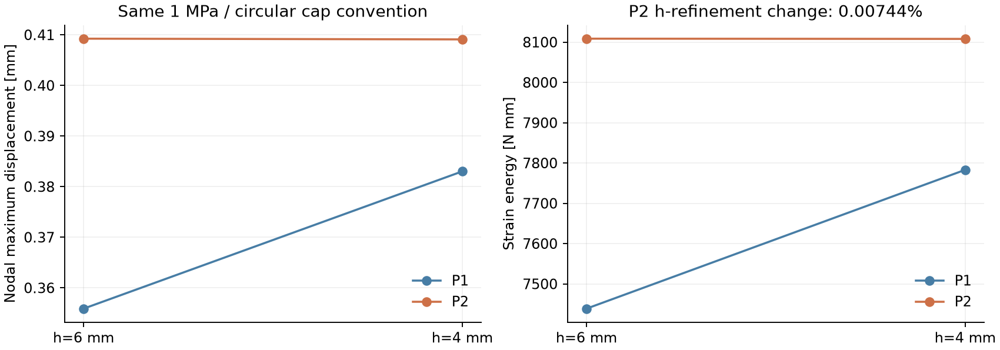
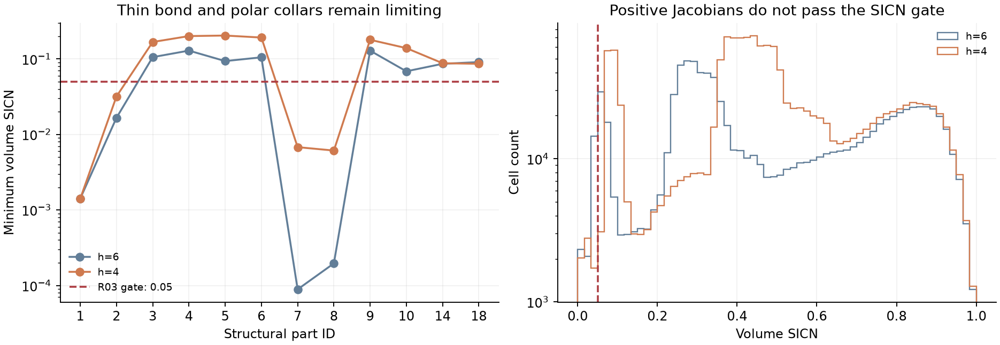
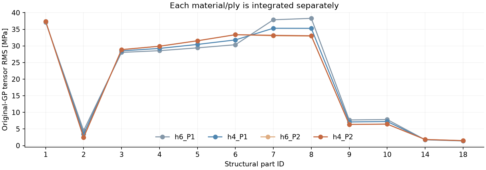

01
验收 / 总结 / 介绍
已完成同一详细构造的 h6/h4、P1/P2 与端口闭合对照。P2 节点位移峰值差 0.0352%、应变能差 0.00744%；全部实际场保留三维 BC/载荷开关。
已完成同一详细构造的 h6/h4、P1/P2 与端口闭合对照。P2 节点位移峰值差 0.0352%、应变能差 0.00744%；全部实际场保留三维 BC/载荷开关。
研究核对完成，生产网格未放行：薄胶层和极区补强仍低于 SICN≥0.05；两个较粗建网尝试 PLC 相交失败并保留。P2 整体响应稳定不等于局部尖角峰值收敛。
网格质量、网格细化与参数检查
网格质量、网格细化与参数检查
检查收敛、变形/应力及合理参考解或趋势
研究核对完成，生产网格未放行：薄胶层和极区补强仍低于 SICN≥0.05；两个较粗建网尝试 PLC 相交失败并保留。P2 整体响应稳定不等于局部尖角峰值收敛。
沿用 C02 的 12 个承载材料区、1 MPa 内压、四组 ±55° 铺层与极区 ±25° 补强、理想粘结及下端 3–2–1 数值定位。六个密封/挡圈部件仍仅展示。没有整端固定、墙面或铰链。保持几何与材料不变，分别改变网格、位移阶次和端口等效力定义。
CPU 完成建网和 FFCx 组装；求解矩阵/向量为 seqaijcusparse / seqcuda。P2 采用精确嵌入 P1 转移和 CUDA P1 GAMG，最终小型 SVD 明确在 CPU。h4 P2 为 6,147,504 个独立自由度；不是 P1 中边点插值。新做 4 个 GPU 求解，复用 1 个 C02 冻结基线。
| 算例 | 真实自由度 | 节点最大位移 mm | 应变能 N·mm | 真实相对残差 | GPU 主求解 s |
|---|---|---|---|---|---|
| h6_P1 | 582,705 | 0.355884733 | 7438.425898 | 1.018e-10 | 28.008 |
| h4_P1 | 851,277 | 0.383010990 | 7782.952579 | 1.030e-10 | 14.369 |
| h6_P2 | 4,142,928 | 0.409238387 | 8108.554223 | 1.415e-10 | 79.275 |
| h4_P2 | 6,147,504 | 0.409094196 | 8107.951320 | 1.622e-10 | 92.127 |
| h6_P1_discrete | 582,705 | 0.355867381 | 7438.243489 | 1.006e-10 | 11.803 |

P1 h6→h4 的节点峰值变化 7.622%、能量变化 4.632%；同 h6 的 P1→P2 节点峰值变化 14.992%。P2 两级网格的整体响应稳定得多。两网格非嵌套且几何分片不同，不作 Richardson 阶次或真实误差认证。同网格 p 加密的柔度/能量增大趋势符合线性变分关系。
固定种子、材料区分层、按单元体积抽取不重复内部质心；共 2048 个唯一位置。使用实际四面体包含判定及 P1/P2 形函数，不采用最近节点、外推或刚体配准。h4 有 1 点不满足包含/材料条件，保留 NaN；交叉网格指标使用其余 2047 点。采样差不是精确全域离散误差。
| 对照（分母为前者） | 共同定位 | 位移向量 L2 差 | 采样应力张量差 | 应变能变化 |
|---|---|---|---|---|
| h6_P1 → h4_P1 | 2047/2048 | 6.45526% | 24.13055% | +4.63171% |
| h6_P1 → h6_P2 | 2048/2048 | 12.59666% | 24.92927% | +9.00901% |
| h6_P2 → h4_P2 | 2047/2048 | 0.16599% | 1.09684% | -0.00744% |
| h4_P1 → h4_P2 | 2047/2048 | 5.80402% | 16.95595% | +4.17578% |
| h6_P1 → h6_P1_discrete | 2048/2048 | 0.01156% | 0.00215% | -0.00245% |
| 网格 | TET10 | 最小体 SICN | 最小面 SICN | SICN<0.05 单元 | 总 CAD 体积误差 | 最大材料区体积误差 |
|---|---|---|---|---|---|---|
| h6 | 914,613 | 8.88407e-05 | 0.0011031 | 18,775 | 0.02782% | 1.08339% |
| h4 | 1,378,773 | 0.00140804 | 0.0011031 | 6,541 | 0.02495% | 0.99558% |

两网格 Jacobian 均为正、单一连通体，公共六节点界面一致；总 CAD 体积误差低于 0.1%。但面/体 SICN 均有小于 0.05 的部分，材料区最大体积误差也仍需处理。这些算例仅作明确隔离的研究对照，不进入生产数据集。h9 与独立 h8 候选均发生 segment/facet PLC 相交，未送入有限元求解；失败记录不替换。
| 材料区 | 材料 | h6 最小 SICN | h4 最小 SICN | h4 低质单元 | h4 原始 GP 应力 RMS MPa |
|---|---|---|---|---|---|
| 1 · 金属气密内衬 | aluminum | 0.00141227 | 0.00140804 | 827 | 37.41713 |
| 2 · 环氧粘接层 0.15 mm | adhesive | 0.0165857 | 0.0317873 | 74 | 2.44732 |
| 3 · 包覆铺层 1 / +55° | carbon | 0.105551 | 0.167547 | 0 | 28.88996 |
| 4 · 包覆铺层 2 / -55° | carbon | 0.128856 | 0.200683 | 0 | 29.91260 |
| 5 · 包覆铺层 3 / -55° | carbon | 0.0936412 | 0.204017 | 0 | 31.55363 |
| 6 · 包覆铺层 4 / +55° | carbon | 0.10502 | 0.191912 | 0 | 33.38247 |
| 7 · 上极区局部补强 | carbon | 8.88407e-05 | 0.00678977 | 2887 | 33.20167 |
| 8 · 下极区局部补强 | carbon | 0.000196117 | 0.00612092 | 2753 | 33.06200 |
| 9 · 上端充装口 · 嵌入法兰与车削 boss | titanium | 0.128647 | 0.179244 | 0 | 6.35839 |
| 10 · 下端服务口 · 嵌入法兰与车削 boss | titanium | 0.0685498 | 0.13907 | 0 | 6.45948 |
| 14 · 上端充装口 · 中空接口套 / 六角扳手位 | steel | 0.0861861 | 0.0877428 | 0 | 1.83503 |
| 18 · 下端服务口 · 中空接口套 / 六角扳手位 | steel | 0.0907964 | 0.0861885 | 0 | 1.49102 |

使用原始 degree-4 积分点及本构方向重建应力；逐材料区积分，不跨铺层/材料平均。重建的原单元 GP 均值和应变能已与求解器结果核对。查看器着色为原单元 GP 体积均值，显示平滑不代表精度提高；原始局部峰值未认证收敛。
圆形端力继承 C02 的 pπr²：上端 326.851300 N、下端 213.824650 N。独立离散孔口对照使用真实多边形面积：上端 326.326505 N、下端 213.481332 N。约 0.181476 N 的轴向离散余量降到浮点积分精度；节点位移峰值改变仅约 0.00488%。此项与网格/阶次对照分开，不改写 C02 历史。
C03 研究核对完成；P2 作为后续科研比较基线更合适。生产网格仍未放行，局部尖角峰值及强度不作认证。C04 量产前须先修复极区短边/薄胶层网格，保留材料区身份并重新检查原门槛。
正在读取记录…